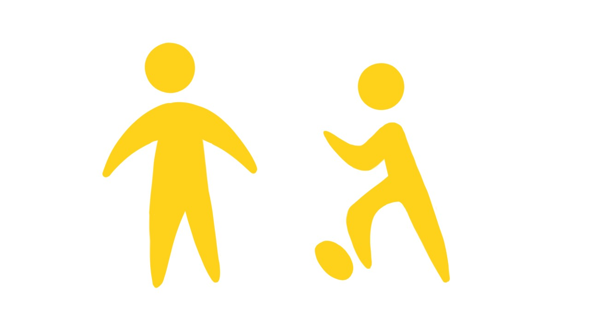
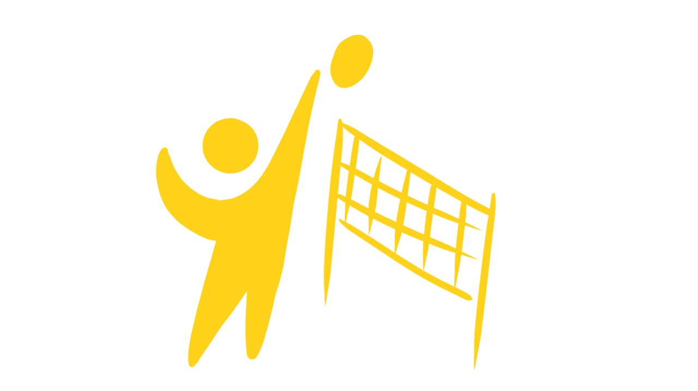
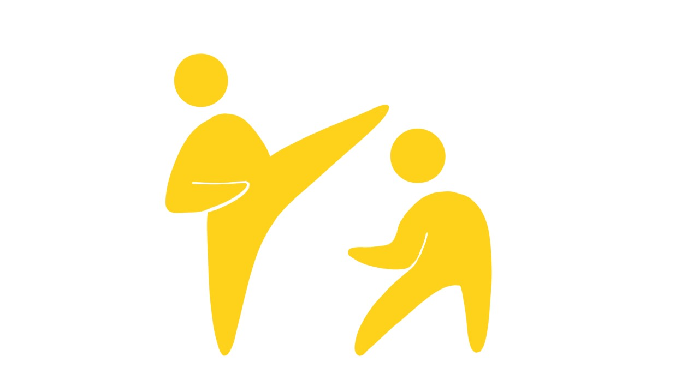

Aulas de futebol
Para crianças
Segunda a sexta, das 19h às 21h.

Esporte e convivência
Modalidades que fortalecem saúde, disciplina, amizade e inclusão social.
Como funciona
A Rede Liga do Bem oferece atividades esportivas para promover inclusão social, lazer saudável e desenvolvimento físico.
Modalidades

Para crianças
Segunda a sexta, das 19h às 21h.

Para adultos
Sábado, às 19h30.

Para crianças
Segunda e sexta, das 19h às 21h.
| Atividade | Público | Horário |
|---|---|---|
| Futebol | Crianças | Segunda a sexta, 19h às 21h |
| Vôlei | Adultos | Sábado, 19h30 |
| Capoeira | Crianças | Segunda e sexta, 19h às 21h |